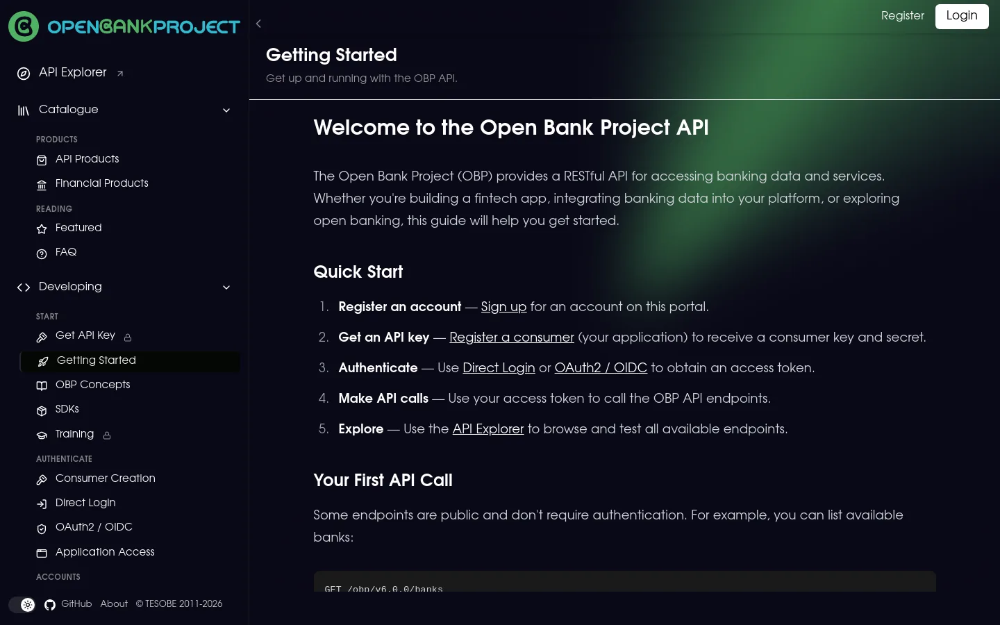

What developers can do
- Get an API keyRegister an application and manage its credentials, usage and Scopes
- Follow the guidesGetting started, OAuth2 and OpenID Connect, Direct Login, consents, VRP, AI agents and MCP, and SDKs
- Browse the APIsEvery standard and version, with each endpoint, the glossary, message docs and gRPC docs
- Ask OpeyThe AI assistant answers questions and finds the right endpoint, with the developer's own permissions
- Subscribe to API ProductsChoose a plan, pay by card through Stripe, and get access the moment the subscription starts
- Work as a teamApplications belong to an Organisation, so the whole team shares their usage and subscriptions
- Give and manage consentsOBP, UK Open Banking and Berlin Group consents, VRP and SCA, all reviewable later
- See their own dataAccounts, mandates, Roles, API collections, personal data and activity
Guides that get you to the first call
From an account to a working API call in five steps, with guides for every way to authenticate.
apisandbox-portal.openbankproject.com/developers/getting-started

Yours to shape
- Your contentPages, the FAQ and featured endpoints are published from API Manager's App Studio, with no deploy
- Your brandLogo, colours and wording come from OBP-API settings
- Your productsAPI Products and financial products come straight from your catalogue in OBP-API
- Your identity providerDevelopers log in through OBP with OAuth2 and OpenID Connect
Run it
- One imageThe obp-portal Docker image, with Redis for sessions
- A Platform AppIt declares the Scopes it needs, and an administrator grants them
- SvelteKitSvelte 5 and TypeScript, in the OBP-Frontend repository
- Open sourceAGPL, with commercial licences from TESOBE
More apps
Every endpoint documented, with the Roles it needs, and callable from the page.
Where bank staff manage users, Roles, consumers and data, and watch the platform live.
Fills a sandbox with realistic banks, customers, accounts and transactions in minutes.